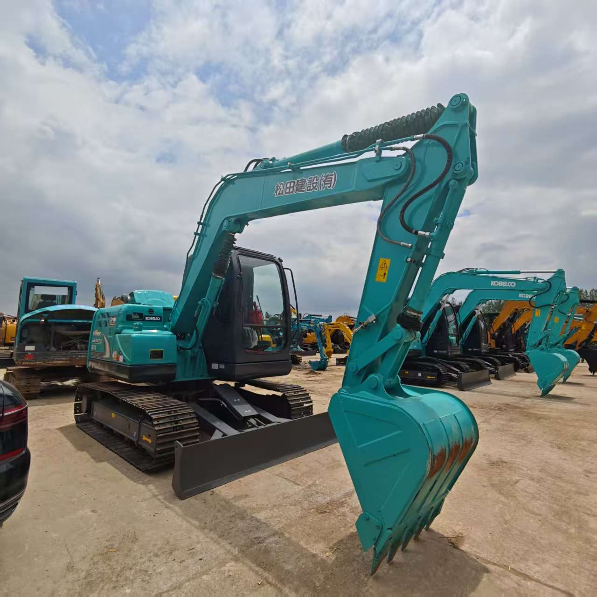

Refurbished Kobelco SK70 Excavator
The Kobelco SK70 is a powerful yet compact hydraulic crawler excavator that excels in a wide variety of construction, demolition, and excavation tasks. As one of the more versatile machines in its class, the SK70 is well-suited for urban construction sites, narrow pathways, and projects that require both precision and power. With its renowned reliability and advanced features, the refurbished Kobelco SK70 offers a cost-effective solution without sacrificing performance.
Honestly, it's almost impossible to buy a brand new excavator from China. They either don't exist or are made in China. If a Chinese seller tells you their Caterpillar/Komatsu/Volvo/Kobelco/Hitachi is brand new, they're lying. Therefore, a refurbished excavator is your best bet.

Here are the detailed specifications for a refurbished Kobelco SK70SR excavator:
Operating Weight and Dimensions
- Operating Weight: 7,000–7,300 kg
- Overall Length: ~6.2–6.5 meters
- Overall Width: ~2.3 meters
- Overall Height: ~2.6–2.8 meters
- Tail Swing Radius: ~1.5–1.7 meters (short radius design)
- Ground Clearance: ~370–400 mm
- Track Width: 450 mm standard
Engine and Powertrain
- Engine Model: Yanmar 4TNV98 or Isuzu 4LE2 turbo diesel
- Rated Power Output: ~52–55 kW (70–74 hp) @ 2,000 rpm
- Maximum Torque: ~280–310 Nm
- Fuel Tank Capacity: ~120–140 liters
- Travel Speed: 2.8–5.0 km/h
- Swing Speed: ~10 rpm
- Gradeability: Up to 35°
Hydraulic System
- Main Pump Type: Variable displacement axial piston pump
- Flow Rate: ~2 × 120–130 L/min
- System Pressure: Up to 27.5–28 MPa
- Hydraulic Oil Capacity: ~160–180 liters
- Boom Cylinder Bore: ~100 mm
- Arm Cylinder Bore: ~85 mm
- Bucket Cylinder Bore: ~75 mm
Performance Metrics
- Bucket Capacity: 0.28–0.35 m³
- Max Digging Depth: ~4.1–4.3 meters
- Max Reach (Horizontal): ~7.2–7.5 meters
- Max Dump Height: ~4.8–5.0 meters
- Bucket Digging Force: ~55–60 kN
- Arm Digging Force: ~38–42 kN
Cab and Operator Features
- Cab Type: ROPS/FOPS certified
- Display: LCD monitor with diagnostics and fuel tracking
- Controls: Dual joystick pilot controls with adjustable sensitivity
- Comfort: Air-conditioned cab (optional), adjustable suspension seat
- Visibility: Wide glass area, rear-view camera (optional), LED work lights
Smart Features and Efficiency
- Eco Mode & Auto Idle: Reduces fuel consumption during low-load operations
- Noise Reduction: Engine and hydraulic tuning for quiet operation
- Telematics Ready: KOMEXS system support in newer refurbished units
- Centralized Lubrication: Optional for reduced maintenance
Attachments Compatibility
- Standard Bucket: 0.28–0.35 m³
- Optional Tools: Hydraulic breaker, compactor, grapple, ripper
- Quick Coupler: Hydraulic or manual options available
Refurbishment Scope
Refurbished SK70 units typically include:
- Engine overhaul (injectors, turbo, seals)
- Hydraulic pump recalibration or replacement
- Electrical system rewiring and sensor testing
- Cab restoration (seat, controls, HVAC, monitor)
- Structural repairs (boom welding, bushing replacement, repainting)
Overview of the Kobelco SK70 Excavator
The Kobelco SK70 is a mid-sized, hydraulic crawler excavator that combines high productivity with low operating costs. Designed for versatility, it can handle a wide range of tasks, including trenching, landscaping, lifting, and material handling. With an operating weight of around 7 tons, the SK70 provides an ideal balance between performance and maneuverability, making it an excellent choice for contractors working in restricted spaces or on jobs that require frequent transport and relocation.
Key Specifications of the Kobelco SK70
-
Operating Weight: 7,000 kg (15,432 lbs)
-
Engine Power: 50.6 kW (67.8 horsepower)
-
Max Digging Depth: 4.9 meters (16.1 feet)
-
Max Reach: 7.6 meters (24.9 feet)
-
Max Lifting Capacity: 2,500 kg (5,511 lbs) at a radius of 3 meters
-
Bucket Capacity: 0.2 to 0.3 cubic meters, depending on configuration
These specifications make the SK70 suitable for a broad range of applications, from trenching and digging to handling heavy materials in tight spaces.
Key Features of the Kobelco SK70 Excavator
Fuel-Efficient and Powerful Engine
The Kobelco SK70 is powered by a robust diesel engine that delivers 67.8 horsepower for strong and reliable performance. Designed with fuel efficiency in mind, the engine ensures that the SK70 is both powerful and economical to run. This fuel efficiency is a significant advantage for contractors looking to reduce operating costs while maintaining high productivity.
-
Fuel Economy: The engine incorporates advanced technology that helps minimize fuel consumption, even during heavy operations, making it cost-effective for long-term use.
-
Eco-Mode Feature: The SK70 comes with an eco-mode feature that adjusts engine power based on the task at hand, allowing operators to save fuel when performing lighter tasks.
Advanced Hydraulic System
The Kobelco SK70 is equipped with an advanced hydraulic system that offers smooth and efficient operation for a variety of tasks. The hydraulic system features high-power flow control, ensuring maximum digging force while maintaining fuel efficiency.
-
Variable Displacement Pump: This feature allows the machine to adjust hydraulic flow based on the job, improving fuel efficiency and overall performance.
-
Load-Sensing System: The hydraulic system adjusts to the workload in real-time, ensuring the machine uses power only when needed, which contributes to energy savings.
This advanced hydraulic system increases the speed and precision of the machine’s movements, resulting in faster cycle times and enhanced overall performance.
Compact and Durable Design
The Kobelco SK70 is known for its compact size and high stability. Its compact tail swing design makes it ideal for working in confined spaces where larger machines might struggle. The narrow tracks and shorter body allow for better maneuverability in urban environments and tight job sites, such as road work and landscaping.
-
Compact Tail Swing: This allows the machine to rotate without extending too far beyond its tracks, reducing the risk of damage or injury when working close to obstacles or other equipment.
-
Robust Undercarriage: The undercarriage is designed to be highly durable, ensuring the SK70 remains stable even in rough terrain or challenging ground conditions.
Operator-Friendly Cabin
The cabin of the Kobelco SK70 is designed for comfort, safety, and ease of operation. With a spacious layout and ergonomically positioned controls, the cabin minimizes operator fatigue and enhances productivity during long shifts.
-
Comfortable Seat: The operator’s seat is adjustable and designed to reduce strain during extended hours of use.
-
Clear Visibility: The cabin’s large windows and minimal blind spots ensure that operators have excellent visibility of the work area, which is especially important for tasks like trenching and material handling.
-
User-Friendly Controls: The controls are intuitively laid out, making it easy for operators to perform a wide variety of tasks without confusion.
Advantages of Buying a Refurbished Kobelco SK70 Excavator
Cost Savings
A refurbished Kobelco SK70 offers significant cost savings compared to a new machine. Refurbished equipment typically costs 30-40% less, depending on the age, condition, and extent of refurbishment. This allows businesses to acquire a high-performance machine without exceeding their budget.
These savings can be reinvested into other areas of the business, such as purchasing additional attachments, investing in maintenance, or expanding the fleet.
Certified Refurbishment Process
A refurbished SK70 undergoes a thorough inspection and repair process to ensure that it meets the manufacturer’s original standards. The refurbishment process typically includes:
-
Engine Overhaul: The engine is inspected for wear and any necessary repairs or replacements are made to restore it to optimal performance.
-
Hydraulic System Restoration: The hydraulic system is thoroughly checked and repaired, ensuring smooth and responsive operation.
-
Undercarriage Restoration: The undercarriage is inspected for wear and reinforced to ensure durability on challenging terrains.
-
Cosmetic Improvements: The machine is repainted, cleaned, and restored to give it a like-new appearance.
Many refurbished machines come with warranties that cover any defects or issues, providing additional peace of mind for buyers.
Environmental Benefits
Opting for a refurbished machine is a more environmentally friendly choice. Refurbishing an existing machine reduces the demand for new materials and manufacturing processes, which in turn lowers the overall environmental impact. This is an important consideration for contractors looking to reduce their carbon footprint.
Maintenance Tips for the Kobelco SK70 Excavator
To ensure that your Kobelco SK70 continues to perform reliably, it’s essential to follow a regular maintenance schedule. Here are some key maintenance tips to keep your machine in top condition:
Engine and Fluid Maintenance
-
Change the engine oil at regular intervals to prevent contamination and ensure smooth engine performance.
-
Inspect and clean the air filters to maintain optimal engine efficiency and prevent dust and debris from entering the engine.
-
Check coolant levels to prevent overheating and potential engine damage.
Hydraulic System Care
-
Monitor hydraulic fluid levels regularly and top up as needed to prevent system failures.
-
Inspect the hydraulic hoses and cylinders for signs of wear, leaks, or cracks.
-
Replace hydraulic filters according to the manufacturer’s recommendations to avoid contamination.
Undercarriage and Tracks
-
Regularly inspect the tracks, rollers, and idlers for wear and damage. Replace any worn parts to prevent costly repairs and downtime.
-
Keep the undercarriage clean and free of debris to extend its lifespan and improve machine performance.
Cabin and Operator Comfort
-
Keep the cabin clean and ensure that windows and mirrors are free from obstructions.
-
Maintain the air conditioning and heating systems to ensure the comfort of the operator in all weather conditions.
Conclusion
The Kobelco SK70 is an excellent choice for businesses seeking a compact yet powerful excavator capable of handling a variety of tasks. Whether you’re working in a congested urban area or on a tight job site, the SK70 offers the perfect blend of performance, versatility, and fuel efficiency.
Choosing a refurbished Kobelco SK70 allows you to get all the benefits of a high-performance machine at a fraction of the cost of a new one. With a comprehensive refurbishment process, a refurbished SK70 can deliver reliable performance for many years, making it a smart investment for your business. By keeping up with regular maintenance and proper care, this machine will continue to meet your excavation needs efficiently and cost-effectively.
Our Commitment
- 2 years / 4000 hours warranty.
- EPA certified.
- No sweatshop labor.
Contacts

- [email protected]
- Youtube Instagram Facebook
- Navigation: G206 (Sishu Bridge) in Changfeng County, Hefei City, Anhui Province, 200 meters north to the east